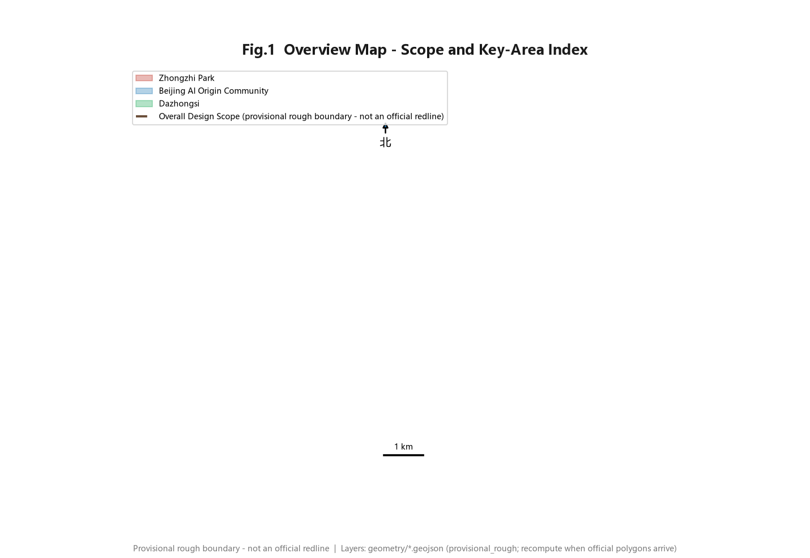
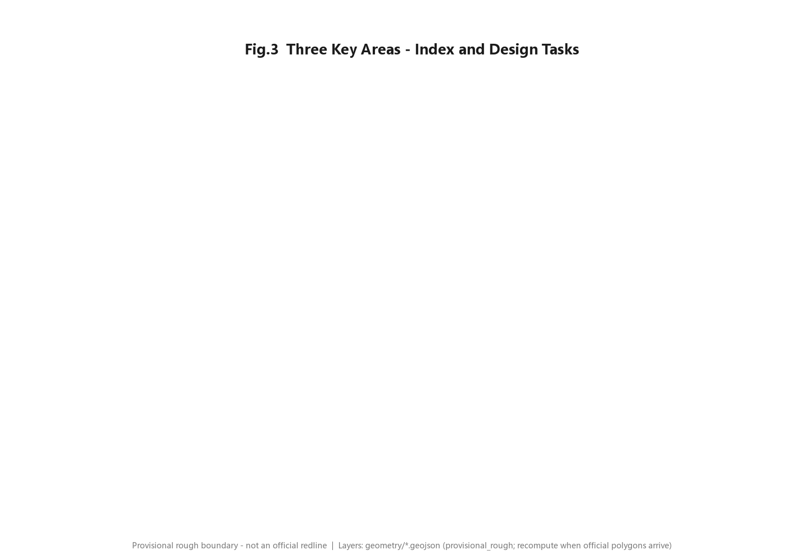
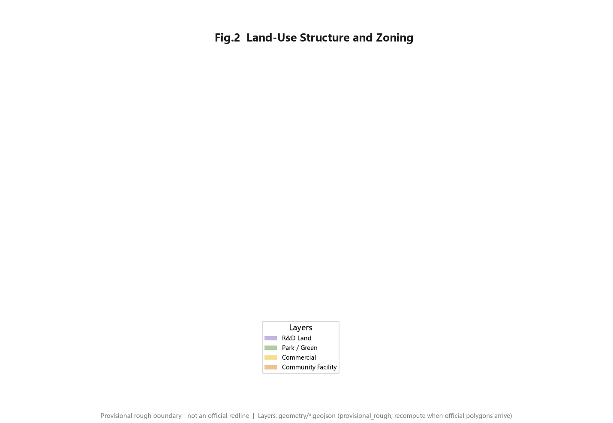
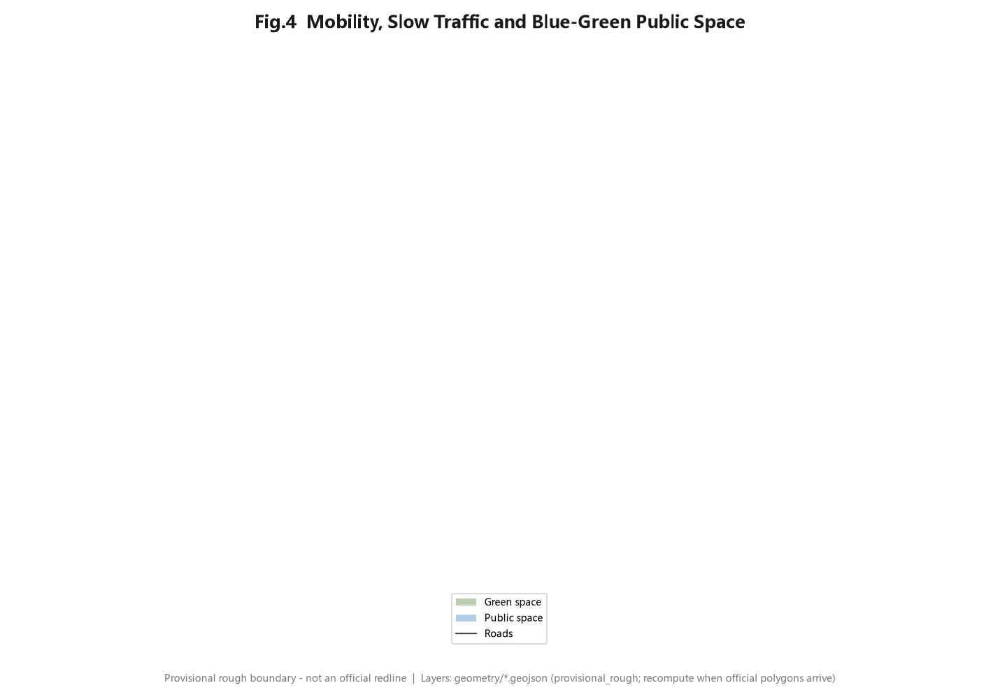
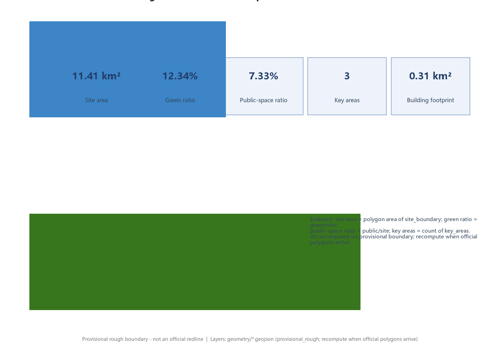

Overview map
Overall design scope and three key areas.

Three-tier scope
43.6 km2 research → 11.4 km2 overall design → 368.4 ha key areas.
Key areas
Three detailed-design key areas.

Land-use zoning
R&D, park/green, commercial, community facility zones tiling the scope.

Mobility / slow traffic
Roads and slow-traffic network over blue-green space.
Blue-green public space
Green and public space composite system.

Buildings
Building footprint and renewal areas per buildings / phasing layers.
Renewal projects
Phased renewal per phasing layer (PHASE-001).
AI scenarios
Ten scenario cards across mobility, AI origin community, enterprise-service ecosystem.
Core metrics
Values recomputed from geometry, consistent with metrics.json (provisional).

Task coverage
agent.1-agent.6 mapped line-by-line in compliance_matrix.json.
Self-check status
Four local gates (deterministic / spatial / visual / professional) all PASS before self_check.json is written.
Sources
Official announcement, taskbook, site-package and source_registry; full list in sources.json.
Assumptions
Provisional rough boundary; green/public ratios medium confidence; FAR unknown (official controls missing).